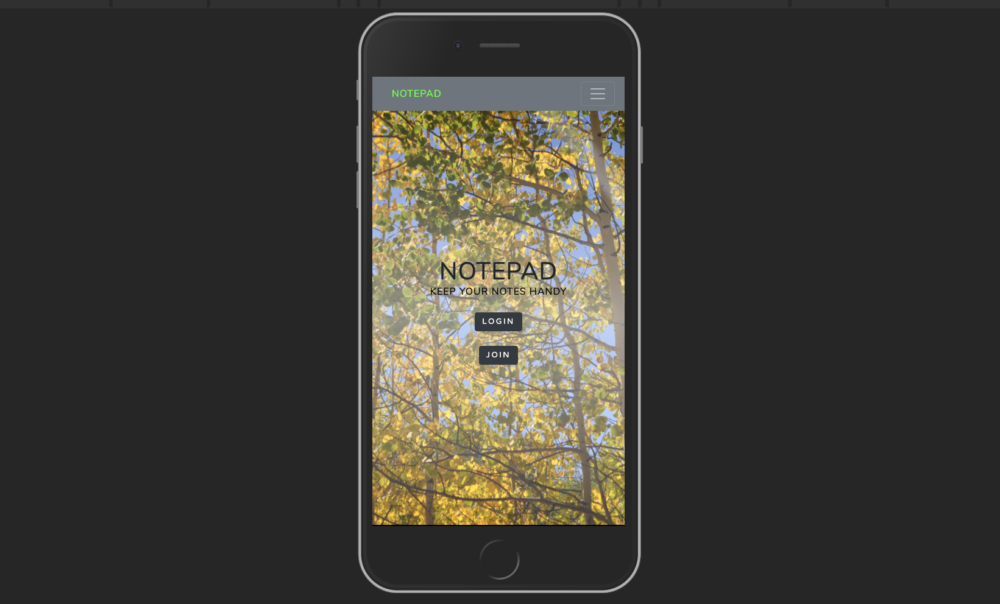

Vinton E. Lee, III
I am experienced in leveraging agile frameworks to implement sound software development for high-level results for corporate strategy by problem solving to further the overall value proposition.
Skills
- Agile Development & Scrum
- Test-Driven Development
- Cross-Functional Communication & Teamwork
- Event Driven Design
- Domain Driven Design
Portfolio
Notepad
Designed and developed an application that consumes and parses REST API data from a MySQL database using Spring Boot endpoints and delivers a seek, fast, and responsive user interface.
Gear Silo

Designed and developed a web service that consumes and parses REST API data from a large multi-table SQL database using Spring Boot endpoints and delivers a seek user interface.
Experience
Senior Software Engineer I - Technical Lead
- Making legacy software application sleeker, faster and more scalable.
- Role: Backend Software Developer and Tech Lead in an Agile team environment.
- Technologies: Kotlin, Java, Kafka, REST API, SQL, NoSQL, Spring-Boot, AWS, and Kubernetes.
Software Engineer II
- Making software application faster and more scalable.
- Role: Full-Stack Software Developer and Tech Lead in a Scrum team environment.
- Technologies: Groovy, Kotlin, Java, Vue.js, SQL, REST API, Spring, Spring-Boot, and Gradle.
Software Engineer I
- Updating backend and frontend software.
- Role: Full-Stack Software Developer in an Agile and Scrum team environment.
- Technologies: Groovy, Java, Vue.js, SQL, REST API, Spring, and Gradle.
Software Engineer
- Building new backend using Java and Spring Boot to update legacy code.
- Role: Java Software Developer in an Agile and Scrum team environment.
- Technologies: Java, REST API, Spring Boot, and Maven.
Software Developer - Student
- Project, Gear Silo - Peer-to-Peer Outdoor Gear Rentals
- Designed and developed a web service that consumes and parses RESTful data from a large multi-table SQL database using Spring Boot. Front-end built with Angular that consumes and parses JSON.
- Project, Beverage Tracker
- Designed and built a REST API that performs CRUD on beverage data from a relational database built using MySQL Workbench. Front-end built with Angular that consumes and parses JSON.
- Project, NOM! Recipe Architect
- Created a Dynamic Web Application that performs CRUD on recipe and user data from a multi-table relational database using Java Database Connectivity (JDBC), Object-Oriented Programming (OOP) and Design (OOD), and Spring Model View Controller (MVC). Front-end built with JavaServer Pages.
Principal
- Consulting and contract work for various organizations and private individuals related to technology, education, property management, and marketing.
Area Director
- Developed marketing and communications materials including website development, graphic design, website content management, SEO, analytics, email campaigns, and social media campaigns.
Staff Associate II
- Increased revenue by 124% by applying business, marketing, and website development skills.
Education
Skill Distillery
- Full-Stack Web Development - Java
Fuller Seminary
- Leadership
Texas Tech University
- Marketing & General Business
Interests
Apart from being a software developer, I enjoy most of my time being outdoors and with my family. In the winter, I am an avid skier and Peloton rider. During the warmer months, I enjoy cycling, kayaking, and fly-fishing.
When obligated indoors, I follow several of action and suspense genre television shows, read the news, cook culinary delights, and I spend a large amount of my free time exploring the latest technology advancements in software development.